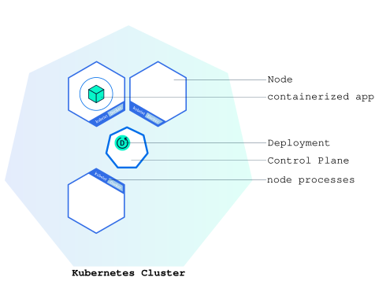

Objectives
- Learn about application Deployments.
- Deploy your first app on Kubernetes with kubectl.
Before you begin
The shell commands in this tutorial use POSIX shell syntax, which is
supported by the default shells on most Linux and macOS systems (for
example, bash, zsh, or sh). Windows users must use a POSIX-compatible
shell such as Windows
Subsystem for Linux (WSL) or Git Bash to run the commands as
written. Commands that use export, $(), and
similar constructs are not compatible with PowerShell
or the Windows Command Prompt.
Kubernetes Deployments
Note:
A Deployment is responsible for creating and updating instances of your application.
Note
This tutorial uses a container that requires the AMD64 architecture. If you are using minikube on a computer with a different CPU architecture, you could try using minikube with a driver that can emulate AMD64. For example, the Docker Desktop driver can do this.
Once you have a running Kubernetes cluster, you can deploy your containerized applications on top of it. To do so, you create a Kubernetes Deployment. The Deployment instructs Kubernetes how to create and update instances of your application. Once you've created a Deployment, the Kubernetes control plane schedules the application instances included in that Deployment to run on individual Nodes in the cluster.
Once the application instances are created, a Kubernetes Deployment controller continuously monitors those instances. If the Node hosting an instance goes down or is deleted, the Deployment controller replaces the instance with an instance on another Node in the cluster. This provides a self-healing mechanism to address machine failure or maintenance.
In a pre-orchestration world, installation scripts would often be used to start applications, but they did not allow recovery from machine failure. By both creating your application instances and keeping them running across Nodes, Kubernetes Deployments provide a fundamentally different approach to application management.
Deploying your first app on Kubernetes
Note:
Applications need to be packaged into one of the supported container formats in order to be deployed on Kubernetes.

You can create and manage a Deployment by using the Kubernetes
command line interface, kubectl.
kubectl uses the Kubernetes API to interact with the
cluster. In this module, you'll learn the most common
kubectl commands needed to create Deployments that run your
applications on a Kubernetes cluster.
When you create a Deployment, you'll need to specify the container image for your application and the number of replicas that you want to run. You can change that information later by updating your Deployment; Module 5 and Module 6 of the bootcamp discuss how you can scale and update your Deployments.
For your first Deployment, you'll use a hello-node application packaged in a Docker container that uses NGINX to echo back all the requests. (If you didn't already try creating a hello-node application and deploying it using a container, you can do that first by following the instructions from the Hello Minikube tutorial.)
You will need to have installed kubectl as well. If you need to install it, visit install tools.
Now that you know what Deployments are, let's deploy our first app!
kubectl basics
The common format of a kubectl command is:
kubectl action resource.
This performs the specified action (like
create, describe or delete) on
the specified resource (like node or
deployment. You can use --help after the
subcommand to get additional info about possible parameters (for
example: kubectl get nodes --help).
Check that kubectl is configured to talk to your cluster, by running
the kubectl version command.
Check that kubectl is installed and that you can see both the client and the server versions.
To view the nodes in the cluster, run the
kubectl get nodes command.
You see the available nodes. Later, Kubernetes will choose where to deploy our application based on Node available resources.
Deploy an app
Let’s deploy our first app on Kubernetes with the
kubectl create deployment command. We need to provide the
deployment name and app image location (include the full repository url
for images hosted outside Docker Hub).
kubectl create deployment kubernetes-bootcamp --image=gcr.io/google-samples/kubernetes-bootcamp:v1Great! You just deployed your first application by creating a deployment. This performed a few things for you:
- searched for a suitable node where an instance of the application could be run (we have only 1 available node)
- scheduled the application to run on that Node
- configured the cluster to reschedule the instance on a new Node when needed
To list your deployments use the kubectl get deployments
command:
kubectl get deploymentsWe see that there is 1 deployment running a single instance of your app. The instance is running inside a container on your node.
View the app
Pods that are running
inside Kubernetes are running on a private, isolated network. By default
they are visible from other pods and services within the same Kubernetes
cluster, but not outside that network. When we use kubectl,
we're interacting through an API endpoint to communicate with our
application.
We will cover other options on how to expose your application outside
the Kubernetes cluster later, in Module 4. Also as
a basic tutorial, we're not explaining what Pods are in any
detail here, it will be covered in later topics.
The kubectl proxy command can create a proxy that will
forward communications into the cluster-wide, private network. The proxy
can be terminated by pressing control-C and won't show any output while
it's running.
You need to open a second terminal window to run the proxy.
kubectl proxyWe now have a connection between our host (the terminal) and the Kubernetes cluster. The proxy enables direct access to the API from these terminals.
You can see all those APIs hosted through the proxy endpoint. For
example, we can query the version directly through the API using the
curl command:
curl http://localhost:8001/versionNote
If port 8001 is not accessible, ensure that the
kubectl proxy that you started above is running in the
second terminal.
The API server will automatically create an endpoint for each pod, based on the pod name, that is also accessible through the proxy.
First we need to get the Pod name, and we'll store it in the
environment variable POD_NAME.
export POD_NAME=$(kubectl get pods -o go-template --template '{{range .items}}{{.metadata.name}}{{"\n"}}{{end}}')
echo Name of the Pod: $POD_NAMEYou can access the Pod through the proxied API, by running:
curl http://localhost:8001/api/v1/namespaces/default/pods/$POD_NAME:8080/proxy/In order for the new Deployment to be accessible without using the proxy, a Service is required which will be explained in Module 4.
What's next
- Tutorial Viewing Pods and Nodes.
- Learn more about Deployments.